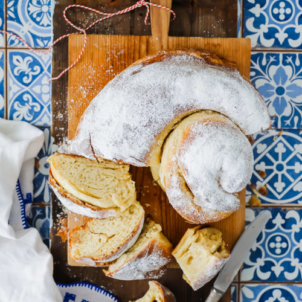

Introducción a la cocina balear
La gastronomía de las Islas Baleares forma parte de la cocina mediterránea y combina productos del mar, ingredientes de la huerta, carnes, embutidos, repostería tradicional y elaboraciones propias de cada isla.
Entre sus productos y platos más conocidos destacan la sobrasada, el queso de Mahón, la ensaimada, el tumbet, el pa amb oli, la caldereta de langosta y los vinos de la denominación de origen Binissalem.
Platos y productos imprescindibles
- Ensaimada de Mallorca
- Sobrasada
- Queso de Mahón
- Caldereta de langosta
Ingredientes habituales
- Productos del mar, como pescado, langosta y marisco.
-
Productos de la tierra:
- Almendras
- Tomates
- Berenjenas
- Embutidos tradicionales, especialmente la sobrasada.
- Quesos, como el queso de Mahón.
Glosario de expresiones gastronómicas
- Bon profit
- Expresión usada para desear que la comida siente bien, equivalente a “buen provecho”. Es habitual escucharla antes o durante una comida.
- Fer un variat
- Expresión relacionada con pedir o comer un variat mallorquín, una mezcla de tapas o pequeñas raciones servidas juntas en un mismo plato o recipiente.
- Que aprofiti
- Fórmula de cortesía que también se utiliza para desear buen provecho a otra persona cuando va a comer.
Tabla de productos gastronómicos
| Producto | Descripción |
|---|---|
| Sobrasada | Embutido tradicional de Mallorca elaborado con carne de cerdo y pimentón. |
| Ensaimada | Producto de repostería típico de Mallorca con forma de espiral. |
| Queso de Mahón | Queso menorquín con sabor intenso y forma característica. |
| Pomada menorquina | Bebida típica de Menorca elaborada con ginebra menorquina y limonada. |
Imagen gastronómica
